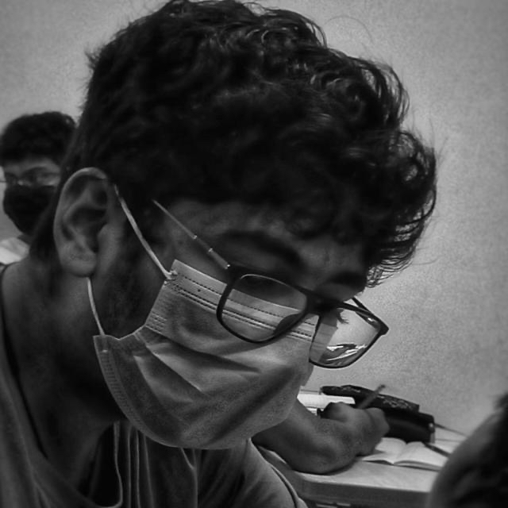

CS undergrad · IIIT Hyderabad · class of 2028
Hi, I'm Parth.
I build systems in C|
I write low-level software that talks to networks and processes, teach computers to read football matches, and measure how language models hold up when people push back.
↳ the background is a passing network: click to call for the ball, move your cursor to press their players.
About

I'm a Computer Science undergraduate at the International Institute of Information Technology, Hyderabad (IIIT-H). I grew up in Abu Dhabi and finished school at Asian International School before moving to India for my degree.
I like work where you can see what's happening underneath: a shell parsing its own grammar, a protocol deciding when to resend a packet, a model changing its answer because someone said it was wrong. Right now I'm a research assistant at the Data Sciences and Analytics Center, building computer vision tools that analyse football matches.
B.Tech, Computer Science & Engineering
IIIT Hyderabad · Telangana, India
High School Diploma
Asian International School · Abu Dhabi, UAE
Experience
-
Apr 2026 – now
Undergraduate Research Assistant
Data Sciences and Analytics Center, IIIT-H · with Prof. Kamalakar Karlapalem
Building computer vision software that reads a football match: it tracks passes, formations and attacking patterns, separates the two teams and the ball, and scores each action by how much it adds to the chances a team creates.
-
Jan – May 2026
Undergraduate Intern
Cosmic 3D, Maker's Lab · Design & Analysis of Software Systems (DASS) course
- Built a web system to run and monitor 3D printers remotely from any browser.
- Used MQTT messaging for live updates between the backend API, a React dashboard and ESP32 firmware, covering telemetry and hardware control.
- Added file management with G-code slicing, 3D model previews in Three.js, and sign-in so several users can share a printer network safely.
Projects
Every card opens a small live demo of the idea behind the project.
Skills
Hover or tap a skill to see where I've used it.
Contact
Let's build something.
I'm open to internships and research collaborations in systems, computer vision and NLP.